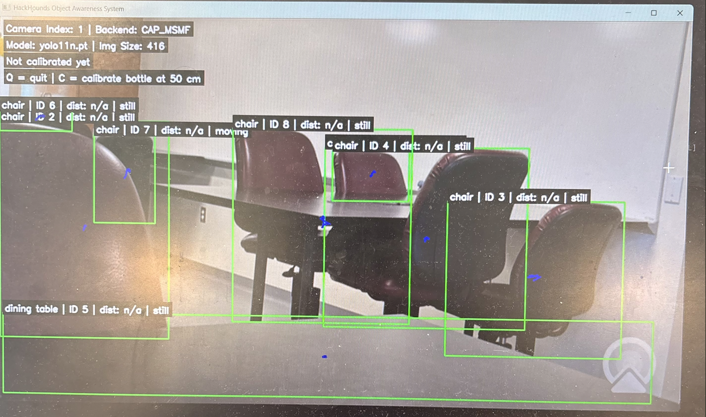
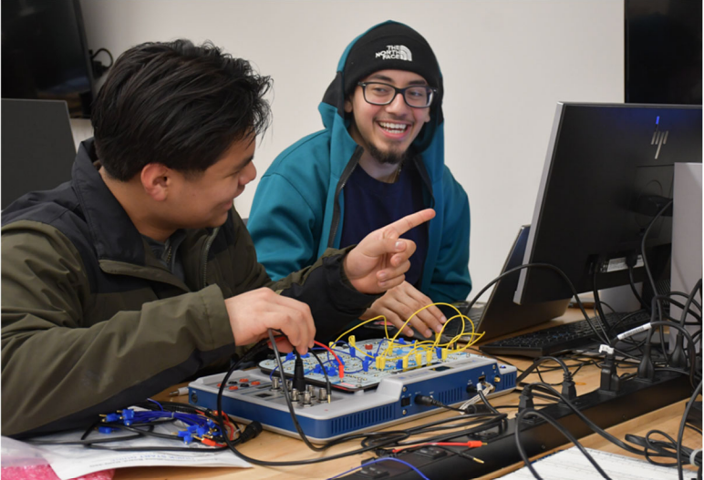
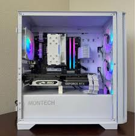
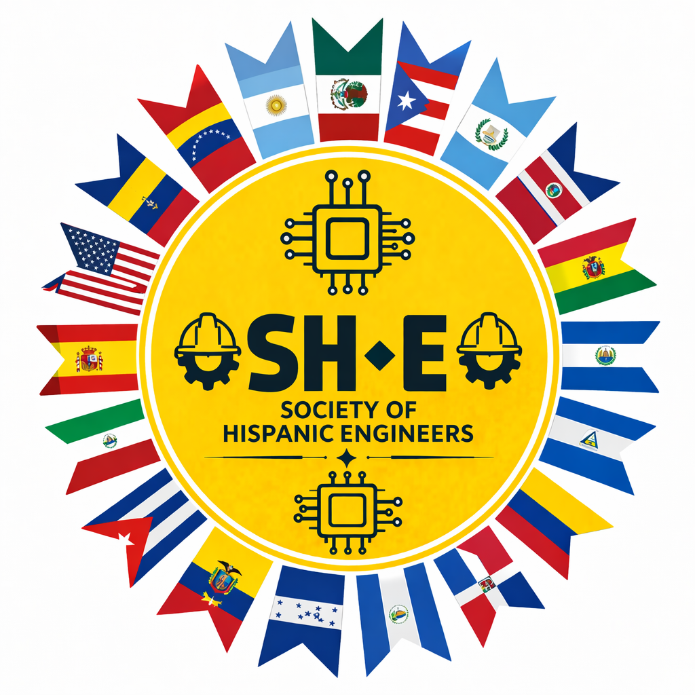
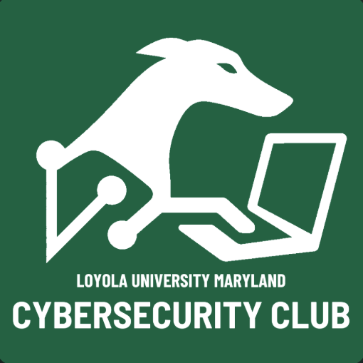
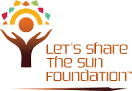

About Me
Computer & Electrical Engineering student @ Loyola MD, focused on building reliable hardware-software systems, with interests in robotics, renewable energy, and applied problem-solving.
Technical Projects & Lab Work

Real-Time Object Detection System
Engineered a real-time computer vision system using Ultralytics YOLO and a Raspberry Pi 3B+ for Loyola's Hackathon. Successfully integrated hardware sensors and python software to process live visual data and estimate object distance.

Circuit & Signal Analysis Lab Work
Validated theoretical engineering models through hands-on hardware testing. Designed and analyzed RC/RLC circuits using NI ELVIS III, and utilized oscilloscopes to capture complex voltage signals and determine transient and steady-state frequency responses.

Custom PC Assembly & Optimization
Built and tested multiple custom desktop PCs while working within strict budgets. Focused on choosing compatible parts, improving airflow and thermal performance, organizing cable management, and making sure each system ran smoothly.
Leadership & Involvement

Society of Hispanic Engineers | Co-Founder
Co-founded and structured a new student organization from the ground up. Established the core mission and long-term strategic goals to provide underrepresented engineering students with vital career development, mentorship, and networking opportunities.

CyberHounds | Lead Web Developer
Spearheading the front-end development and digital presence for Loyola’s cybersecurity club. Actively collaborating with club leadership to launch technical initiatives and drive student engagement through a modernized, responsive web platform.

Let's Share the Sun Initiative (LSTS)
Championed global energy equity by organizing campus-wide sustainability events. Facilitated educational outreach and fundraising efforts to support the real-world deployment of affordable solar systems in underserved communities.
Loyola Career Ambassador & Resident Assistant
Serving as a primary mentor and resource for 30+ residents while simultaneously acting as a Rizzo Career Ambassador. Dedicated to fostering a safe, inclusive campus environment and actively equipping students with professional development tools.
Resume
My current resume. Updated regularly as I gain experience.
Contact
Loyola Email: yromero@loyola.edu
Personal Email: yeraldrom06@gmail.com
GitHub: github.com/yeraldrom06
LinkedIn: linkedin.com/in/yerald-romero-jr